Chat
Answers with sources
The chat doesn't just answer: it lists the files it used and the passages it quoted, with page numbers. From there you can open the PDF, or tick documents to keep working on those alone.
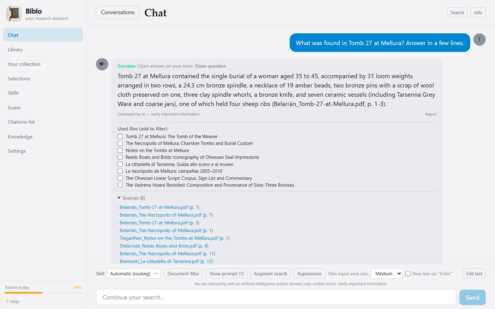
Are you a researcher and not sure how to use AI in your work?
Connect your PDF folders once and Biblo reads them all: for every question it searches your whole library on its own, and under each answer it shows the document and page. The AI assists you; the work and the judgement stay yours.
Free · Windows 10 and 11, 64-bit · Mac with Apple silicon, macOS 15 or later
The work that takes up most of the time in research, done on your own documents, with the sources always in view.
You don't upload files to the chat or pick, each time, which documents to work on: Biblo has already read everything you've connected and, for every question, finds the passages it needs across the whole library on its own. That makes it an assistant built around your work and what you're trying to get done. And if you want to focus on a few texts, a selection narrows the field.
Ask your PDFs questions in plain language: the answer comes with the passages it quotes, document and page.
Describe a subject and Biblo tells you which volumes really discuss it, ranked by relevance.
Summarising a volume, analysing an argument, comparing two texts: each task has its own specialised assistant.
Biblo builds cards for authors, works and figures and links your documents to each other, so you see where they meet.
A single index of everything your texts cite (works, authors, figures) with how often each one appears.
PDFs without text, such as scanned volumes, are read with OCR and can be questioned like the others.
Biblo doesn't write your research for you: it reads, searches and lines up the sources. Every answer can be checked against the text, and if the answer isn't in your documents, it says so. The questions, the choices and the conclusions remain yours.
Biblo costs nothing and has no subscription. For the AI it uses your own personal Google Gemini key, which is free too: it takes a minute to create and the app shows you how. Requests go through your account, your files stay on your computer (Google only receives the passage needed for each answer), and you can revoke the key whenever you like.
Once you have hundreds of volumes, the problem is no longer finding a term: it's remembering which book discussed it, and how. Biblo holds both ends — it searches meaning rather than letters, and hands you the exact passage its answer came from.
Ask “how was consent justified” and it finds the passages about it, even when those exact words never appear.
Under every answer sit the files it used and the passages it quoted, with page numbers. One click opens the PDF at the right spot.
If the answer isn't in your documents, it says so instead of inventing one.
After that the library stays ready: it only updates when you add new documents.
Tell Biblo where the PDFs are. They stay exactly where they are: no uploads, no copies in the cloud, no folders to reorganise.
Three separate, repeatable phases. Read prepares the text for search. Inspect builds the cards for authors, works and figures. Find connections relates the documents to one another.
Type your question in the chat. Biblo picks the right assistant, searches the texts, selects the passages and answers with citations.
Every screen below is the real application, not a mockup.
The chat doesn't just answer: it lists the files it used and the passages it quoted, with page numbers. From there you can open the PDF, or tick documents to keep working on those alone.

Summarising a volume, comparing two texts, finding a passage, analysing an argument: each task has its own assistant with its own way of reading. Biblo picks the one that fits your question — or you pick it yourself.
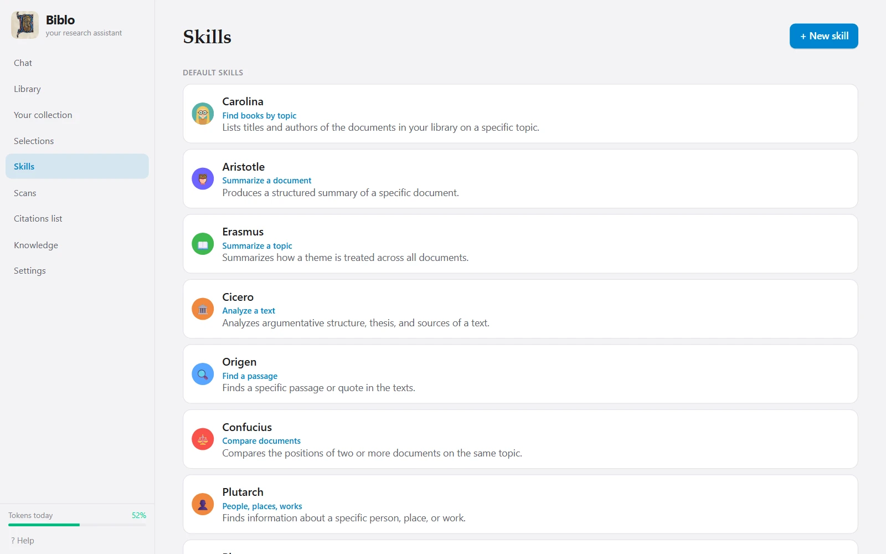
At a glance: how many documents have been read, how many inspected, how many connected. The three phases are deliberately separate, so you can read everything now and go deeper later.
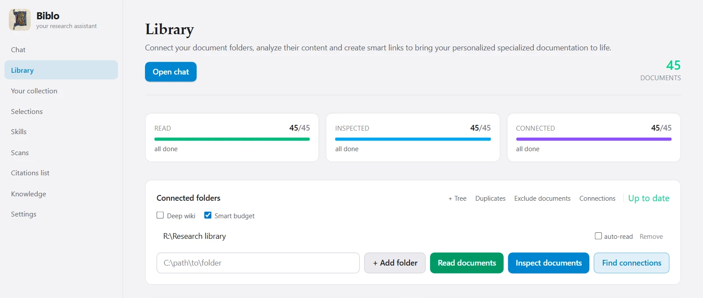
Your documents become volumes on a shelf, sortable by date, title or author, showing the language and marking the scans. One click opens the book.
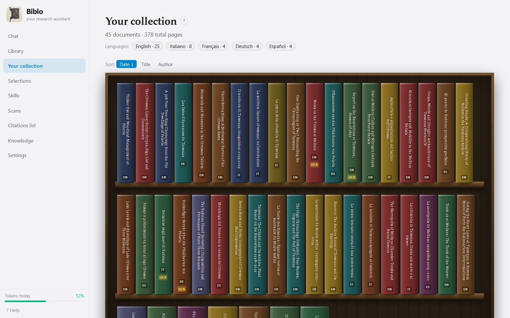
Describe a topic and Biblo tells you which volumes actually discuss it, ranked by relevance. The result becomes a selection you can use as the boundary of a conversation.
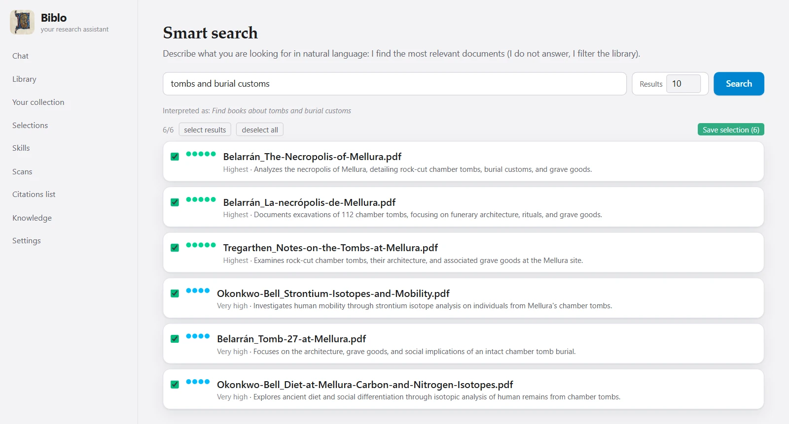
Scanned books and PDFs without a text layer are read by the built-in OCR and become searchable like the rest. The recognised text sits next to the page, and you can correct it.
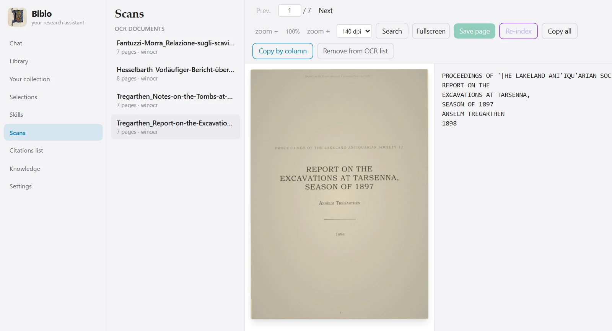
Everything your texts cite — works, authors, figures — gathered into a single searchable index, with how many times each entry appears.
Narrow a conversation down to a group of documents: outside that selection Biblo doesn't look, neither to search nor to cite.
Interface in five languages, light or dark theme and adjustable zoom: everything scales, nothing becomes unreadable.
Cards, connections and conversations are files on your disk, and you can export them whenever you like.
Every screen is the real application, in the language you picked above. The documents, on the other hand, are invented: a demonstration library made for the purpose.
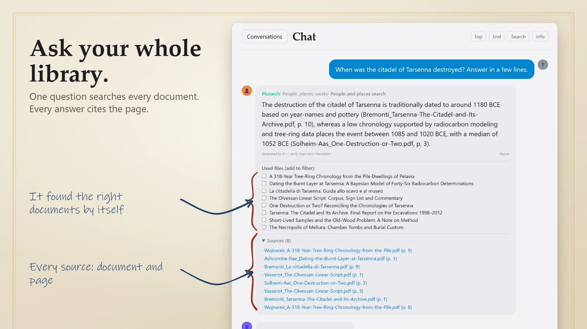
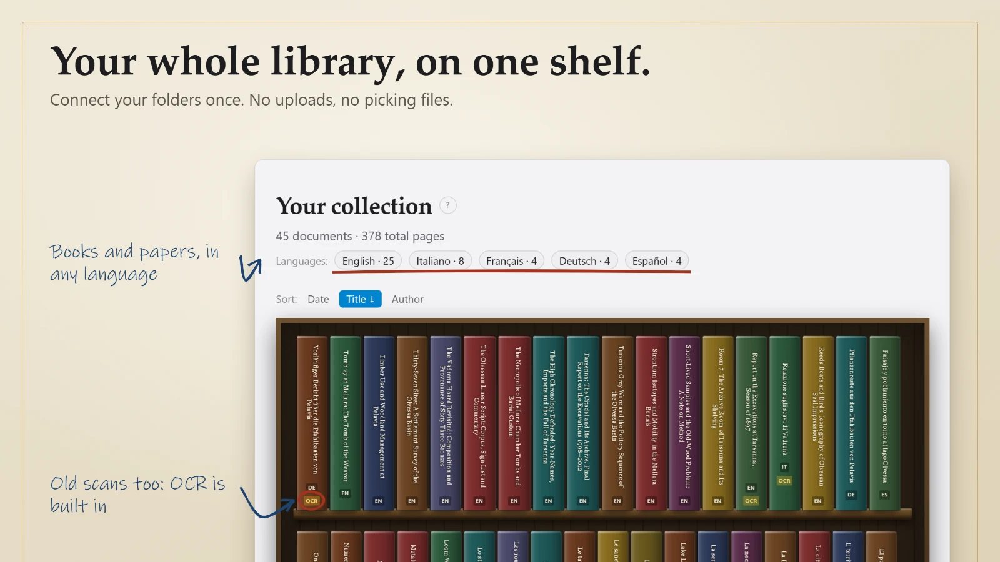
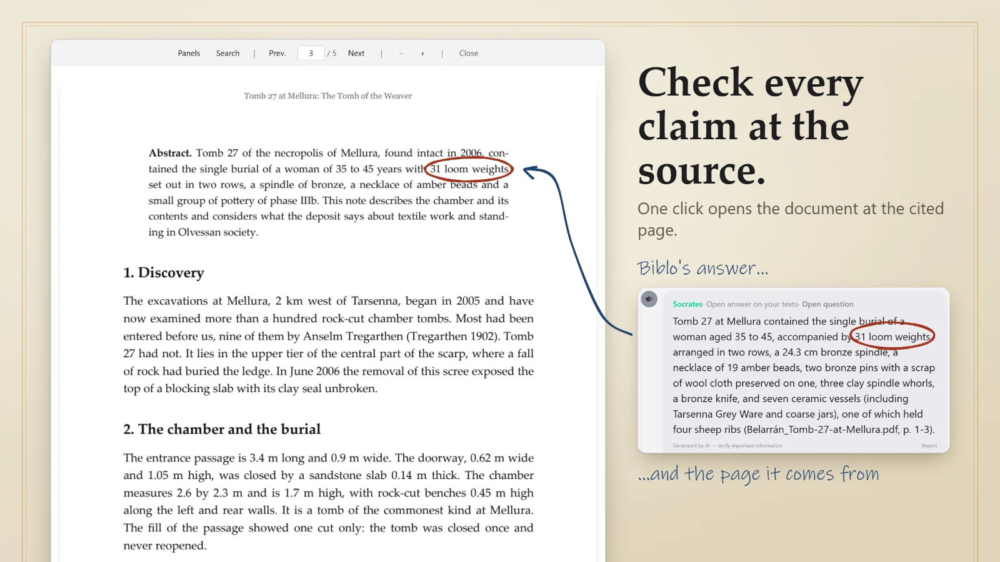
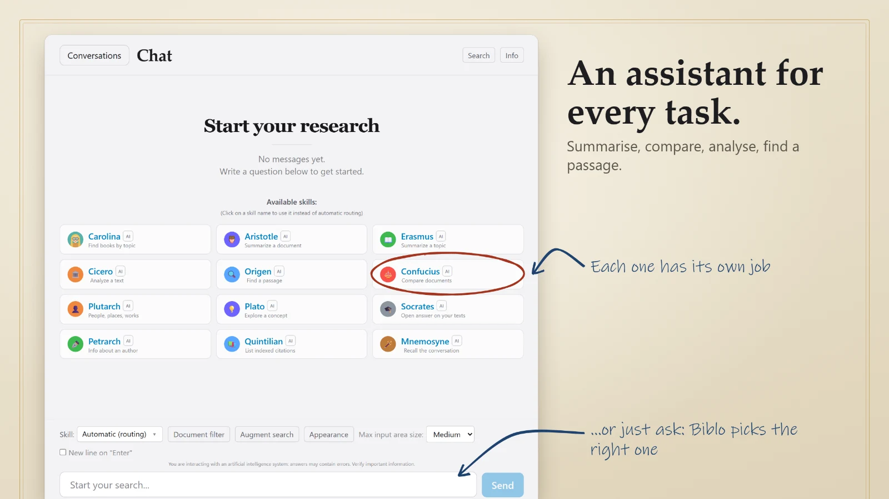
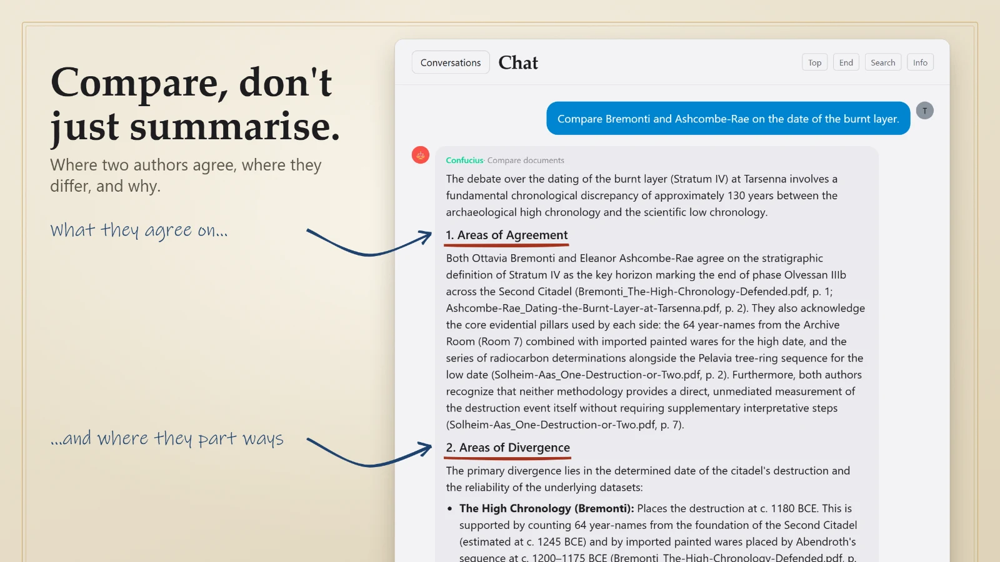
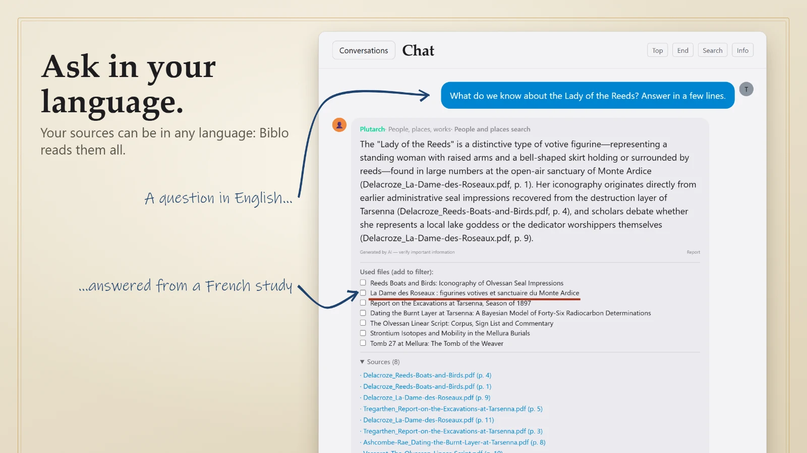
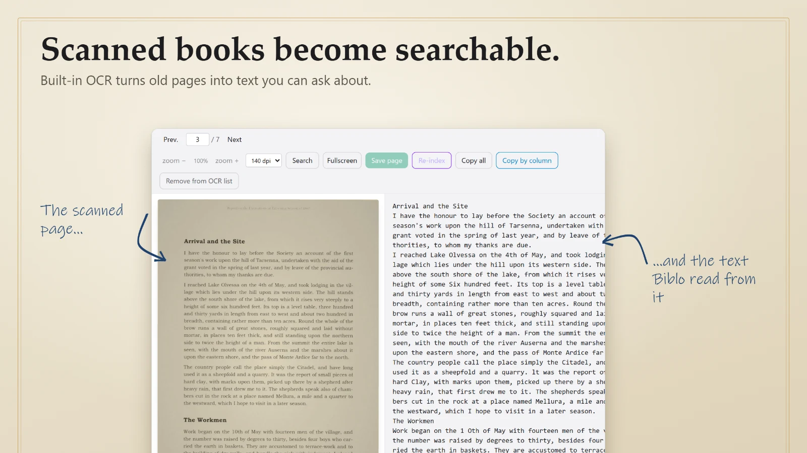
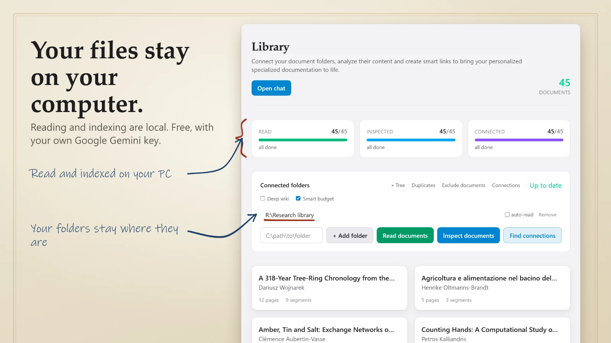
Scroll sideways to see the rest →
Reading, the index and the search store are local: no file is uploaded anywhere. When you ask a question, only the passage needed to answer it travels to the language model, together with your question. It doesn't pass through servers of ours, and we don't keep it.
The PDFs stay in your folders. The index lives next to them, on your disk.
What leaves is the passage required for that single answer, not the library.
Biblo uses your key with the model provider: requests go through your account, not ours.
Nothing to configure by hand. On Windows it installs for your user account, no administrator rights needed; on a Mac you open the downloaded file and drag Biblo into the Applications folder.
The file isn't published yet: the button goes to the releases page.
(Get-FileHash Biblo_1.2.1_x64-setup.exe -Algorithm SHA256).Hash
6F3076285986F1E544880F6B86373DFE1AE9B4DCEE07A494CAE356D45041A1BF
shasum -a 256 Biblo_1.2.1_aarch64.dmg
c18a576600d92b52de93879b23ddde8c0f648bd6f5c00b40bfb80e95232b6b75
64-bit Windows, or a Mac with Apple silicon (M1 or later) running macOS 15 Sequoia or later. There are no builds for Linux or for Intel-based Macs for now.
Around 2.5 GB: the application, the model that turns text into numbers, and the index of your library.
From Google Gemini: it takes a minute to get one from Google's site. Without a key the AI side can't work, but everything else can: importing, reading and searching your documents all happen locally, and the app only asks for the key when you use an AI feature (chat, document inspection, connections).
Everything runs on the processor. On modest machines the first read is slow, but the app deliberately leaves cores free so your computer stays usable.
Not to read and search your documents: that part is entirely local. You need one for the chat and for inspection, because answers and cards are generated by a language model that lives online.
The application is free. For the AI features you need a key from the model provider, Google Gemini, which has a free plan: chat usage counts against that plan, not against us.
From Google AI Studio, with any Google account: it's free and takes a couple of minutes. The first time, Google asks you to accept its terms (you must be 18 or older); then you create the key and paste it into Biblo, which checks it. The video shows every step.
PDFs, including scanned ones: if a document has no text layer, Biblo runs OCR on it and then treats it like any other.
Biblo is developed against a library of 70 volumes and over 11,000 pages, and handles it comfortably. The practical limit isn't the number of files but the time of the first read, which depends on your processor.
It only happens with the .exe installer from this site: that's the warning Windows shows for any program not signed with a commercial certificate. From the Microsoft Store, Biblo installs without warnings, because Microsoft signs the package. If you use the installer, you can check the SHA-256 fingerprint of the file you downloaded against the one published above: if they match, the file is exactly the one that was released.
Not by us: we never receive or store your files. When an answer is generated, only the necessary passage is sent to the model provider. On the free plan, though, Google may use those texts to improve its models, and there is no way to turn this off. The app explains this when you enter your key.
Yes, and that's the normal way it works: you enter the key and requests go through your account with the provider.
No. The PDFs stay exactly where they always were, in your folders. On a Mac you remove Biblo by dragging it to the Trash; the data it produced (index, chats, settings) stays in your user's Library › Application Support › Biblo folder: delete that too if you no longer need it.